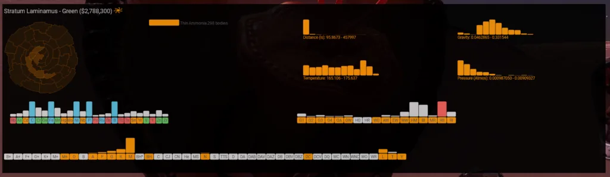
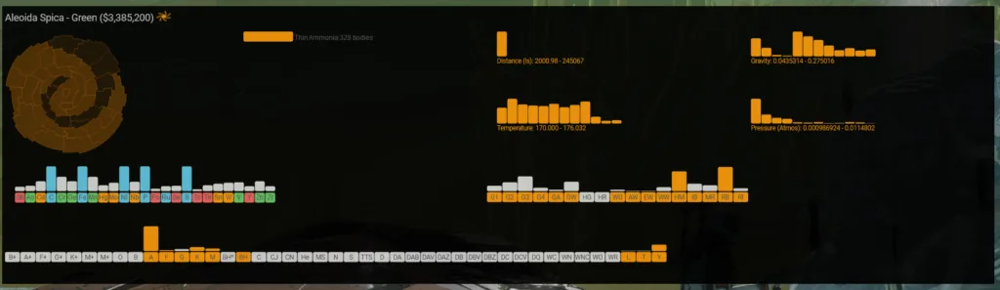
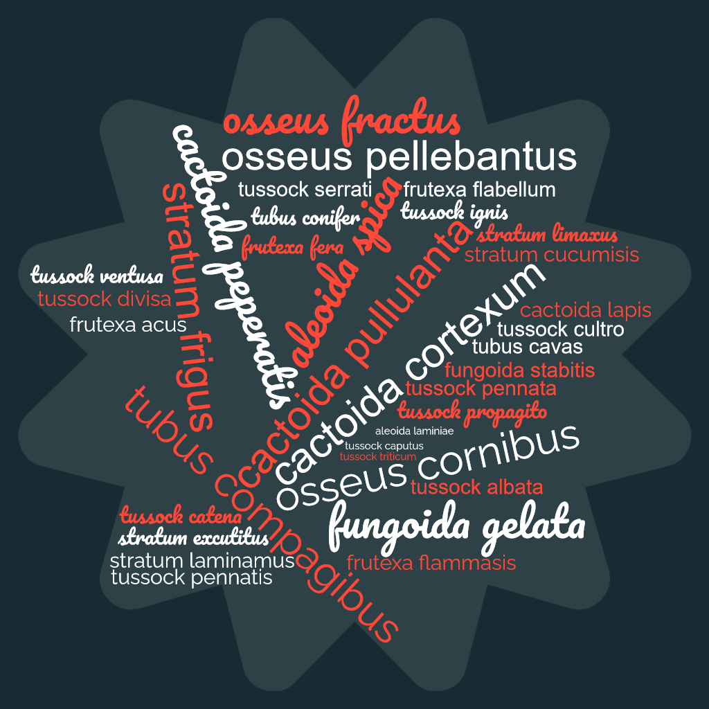
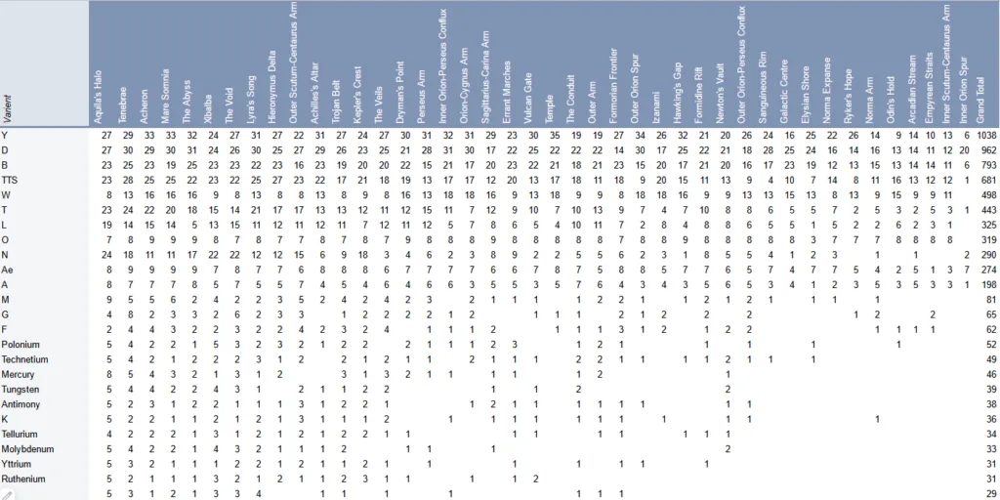
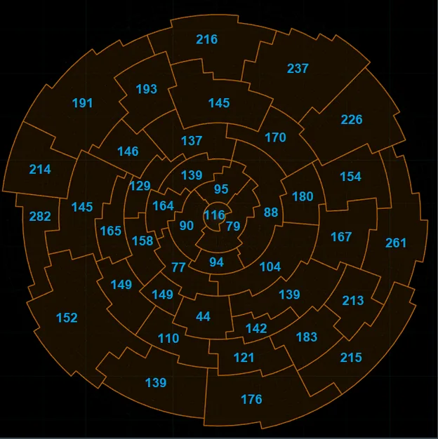
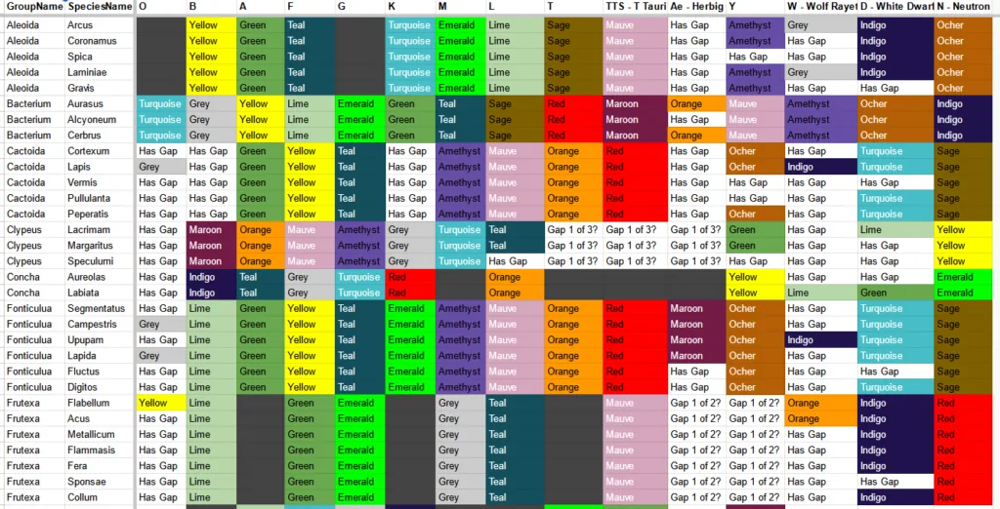

Commander Marxanthius is one of our dedicated catalogers. He does a weekly audit of the Codex against our records to ensure that we are up to date and has a unique knowledge of the codex. He doesn’t just fly a desk he is also one of the pioneers of the Canonn Challenge and has visited one of everything. He has written a guide to getting your name in the codex.
So, you want to get your name in the codex eh? Up along all those other great explorers? Well, I don’t think you will catch them on the number of discoveries, but maybe, just maybe you might be able to slap your name on one of the biological variants. Hopefully it isn’t that Stratum Araneamus – Emerald, that one has already been claimed and it looks like greeny brown slippery, bubbly…..
As of 3309-05-22, there are an estimated 7,000 codex entries left to discover, and with an average of 30 discoveries each week you’ve got nearly 4.5 years to find that elusive title.
All biologies have certain spawn requirements, like gravity, temperature and atmosphere. One specific spawn requirement separates biologies into two categories, Star or Mineral. Mineral based biologies are dependent on the minerals in the planet and aren’t reliant on the star types in the system. These are often discovered first in a region as their requirements are less strict. The other type is based on the stars in the system, and not just the primary star. Secondary and planetary stars provide a potential for their biologies to spawn. Often Y class stars are not going to provide the necessary goldilocks zones for biologicals, but when combined with other warmer primary stars the chances increase. This makes hunting for certain star types challenging, as the galaxy map filters by primary star alone.
What about those Nebula based biologies? I thought you wanted to get your name on a codex entry?
Hunting for Star based biologies in areas that still have mineral based biologies is probably the best method to increase your chances of a codex entry, even if it is just tripping over a mineral based one.


Codex entries are based on each region. Not all biologies can be found in each region, as some are restricted to or from certain arms of the galaxies. Stratum Laminamus – Green as an example, is only found in a small part of the galaxy, unlike Aleoida Spica – Green which just doesn’t appear in one arm.
The following biologies are region locked to certain arms of the galaxy.

Hunting for stuff that shouldn’t spawn, will lead to disappointment.
NOTE: The local ships computers log files will record a different region than what the Pilot’s Federation computers will accept and record in the Codex when a discovery is made on the edge of some regions. This can lead to some discrepancy between what is in the Canonn Bioforge, which is based on CMDR log files and the Codex which is based on shoddy data and shady deals.
Picking which region to hunt in is going to be based on a number of factors, but really it is going to be the one region that has the most number of potential biologies.
The following link will show a chart on how many biologies are still yet to be discovered in that region, based on their mineral and star type. Across the bottom, it is ordered by the grand total, so as of writing this, Aquilia’s Halo has the most potential as 282 and Inner Orion Spur has the least at 44.

In a more graphical format, here are the numbers matched to their regions as of 3309-05-22

Now before everyone heads off to Aquilla’s Halo, please read on.
Traveled areas have less potential. The track between the Bubble, Colonia and Sagittarius A* are pretty beaten paths with a low number of discoveries potential. Still plenty of things to discover, but your chances are going to be higher elsewhere. The outer edges of the galaxy have more potential, including mineral based biologies because they simply haven’t been traveled as much as other regions.
Careful though, outer regions potentially have different star class distributions. For example, Aquilia’s Halo may just not have any white dwarfs, which will make finding those biologies a little challenging. A great site for exploring those star distributions is https://edastro.com/
Where would I go?
If I was in the bubble, I would head for Lyra’s Song, by way of Outer Orion Spur and Achilles’s Alter. Wanting to get there quicker? I’d use https://www.spansh.co.uk/plotter and use the neutron highway to get myself out into the undiscovered area a little quicker. Don’t forget to head up or down off the galactic plane to get out of that more commonly traveled space.
Mineral biologies are going to be random, so hunting for star types is the way to go. If the goal is just a codex entry, depending on the region, you can potentially skip certain star types. For example, if you are in the Galactic Center, Star Types M, G, F, and K have had all their types discovered, you looked at the chart right?. That isn’t to say that you might find a secondary Y star in one of those systems with Y type biologies, but I thought you wanted a codex entry?.
What would I hunt?
I would meander my way through those regions looking through the galaxy map for the unique/rarer types, like W,O,B,N,Ae and D. Then filter out any that I wanted to avoid, perhaps K class, and then set a slow route from one unique to the next unique, scanning as I go along.
Drop in, honk the discovery scanner. Scan the planets in FSS, see if the tools (see below) indicate anything, then perhaps planet scan or move on to the next.
Most important tool for Codex Hunting is going to be Observatory with the BIO Insights plugin. https://edjp.colacube.net/ This single tool will cut down your search time by 50% if not significantly more. They have done an amazing job with this tool. As you FSS the system and each planet, it will indicate if there is a potential codex entry to be found, no orange diamond means continue on. Ok, I guess some planets are worth some money, and some stratum can earn you a near 100 million creds for first scans, but all that pales in comparison to a Codex Entry doesn’t it. Don’t have a second screen, it will popup overlays and audio messages if you turn them on.
Help make the tools better
The biology requirements are all figured and based on the logs gathered by other commanders running tools to collect data and refine that information into precise requirements. You can help with that by running tools like
This combination of tools records information about the things you can, as well as provides you details about the system you are currently in. One helpful feature of the Canonn plugin is that targeting a system will tell you if it has potentially been already explored by someone else, allowing you to know if there is anything left to scan or if you should perhaps skip this one.
Don’t worry, no one can steal your codex entry, as soon as you scan that item for the first time in a region, it instantly gets recorded. First foot falls work the same way, but if you want to get that first discovered tag on the planet, then I would recommend a quick spin to one of the DSSA carriers and sell your exploration data. First discovery tags on a planet or star only get recorded when you sell your exploration data. You can find DSSA carrier locations on the EDAstro site here https://edastro.com/galmap/ using the layers and turning on DSSA Carriers, pretty sure there is one near you.
<No Data Available>
Please always check the in game codex before doing a deep dive on a particular item, as the hand transcribed codex entries can occasionally be wrong. If you find any discrepancies, please contact CMDR Maxanthius on the Canonn Discord server to inform me of my failures.
In the transcribed codex, there is a tab called Missing Colours

Based on the entryIDs from the log files there are gaps on the discovered items which are believed to be undiscovered BIOs. As of 3309-05-22, Cactoida Vermis Ocher is believed to exist around a Y class star because Ocher has been found for other Cactoida variants around Y class stars. These are only theories though, as there is also a gap for Cactoida around K class stars, but none have been discovered and given how common K stars are scanned you would think at least one would have shown up by now.
So continuing that first example and hunting for Cactoid Vermis Ocher, using the Canonn Bioforge you can make assumptions that all vermis are found on Thin Water atmosphere planets, and you are looking for a Y class star. It also isn’t on the list of restricted region Bios, so it should be able to be found anywhere in the galaxy.
One could presumably use a tool like spansh bodies search to find Thin Water atmosphere planets and cross reference them with systems that have a Y class star. Perhaps even include some temperature parameters. Even though these systems had to have been visited by other commanders in order to show up in the Spansh site results, it could have been before thin atmospheric planets were landable, or perhaps someone just blasted through and didn’t stop to scan them. It at least provides a target list to visit instead of stumbling around out in the black hoping to come across a thin water atmosphere planet with a Y class star in the system. To each his own.
Use the Neutron highway, to get to a more unexplored region and look for rarer star types, while using the Bio Insights plugin in observatory to burn from system to system until you see that orange diamond, keeping your fingers crossed that when you scan that bio, the system says “New Codex Entry”.
Best of luck out there CMDRs.
Marxanthius.
Ideas for future study: